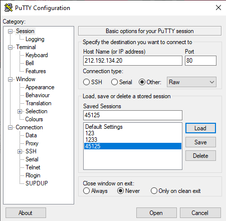
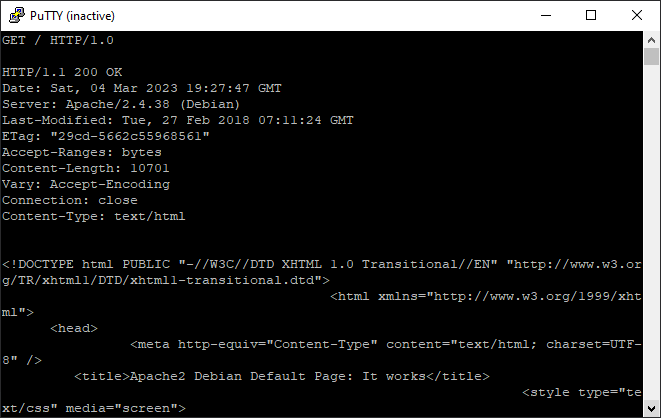
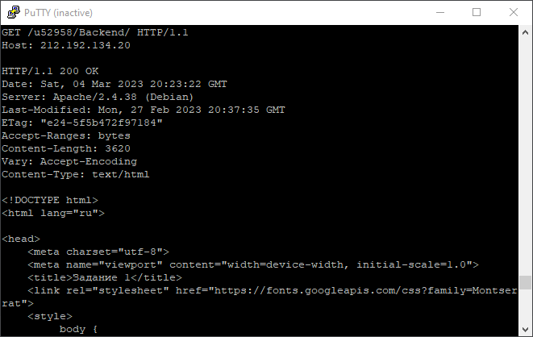
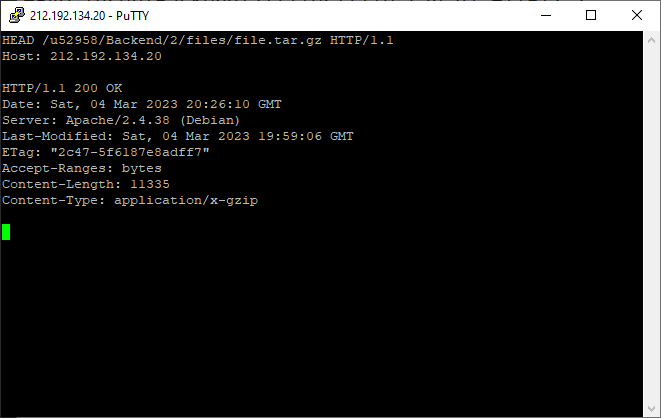
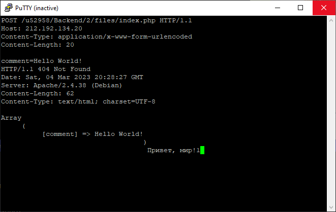
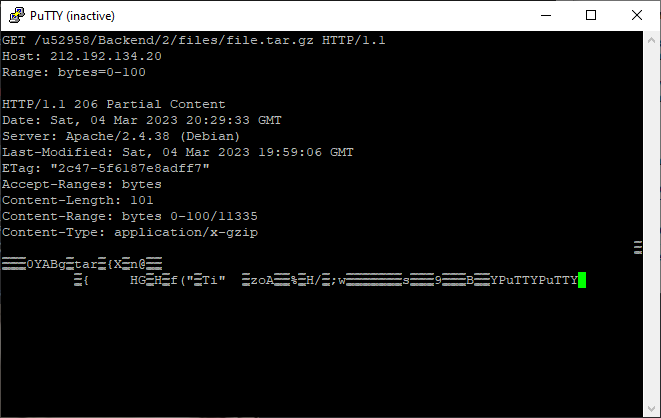
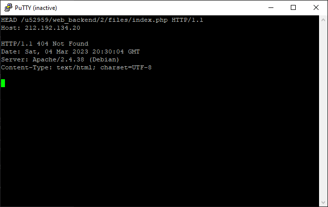

0. Подключимся к серверу через putty, используя данные настройки.

1. "GET / HTTP/1.0" - это строка запроса HTTP, которая запрашивает
главную страницу сайта с помощью метода GET и версии протокола HTTP 1.0.

2. Это строка запроса HTTP, которая запрашивает ресурс /u52958/backend/1/
на сервере с помощью метода GET и версии протокола HTTP 1.1.

3. Это строка запроса HTTP, которая запрашивает заголовки ответа для файла file.tar.gz
в директории /u52958/backend/2/files/ на сервере с помощью метода HEAD.

4. Это строка запроса HTTP, которая запрашивает заголовки ответа для изображения
image.png в директории /u52958/backend/2/files/ на сервере с помощью метода HEAD.
5. Это строка запроса HTTP, которая отправляет данные comment=Hello World! на сервер в директорию /u52958/backend/2/files/ и файл index.php с помощью метода POST,
при этом указывается тип содержимого Content-Type: application/x-www-form-urlencoded и длина содержимого Content-Length: 20. После этого сервер выводит как ответ полученную информацию.

6. Этот HTTP запрос запрашивает файл file.tar.gz размером от 0 до 100 байт с
веб-сервера, расположенного по адресу 212.192.134.20, в каталоге /u52958/backend/2/files/.

7. Запрашиваем HTTP заголовки файла index.php, тем самым узнаём его кодировку
расположенного в директории /u52958/backend/2/files/ по ip адреса 212.192.134.20.
